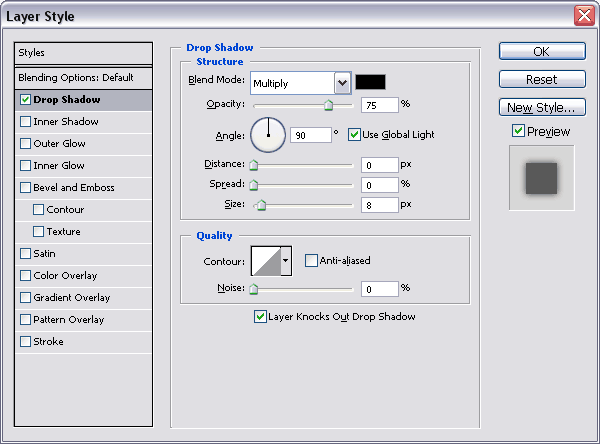
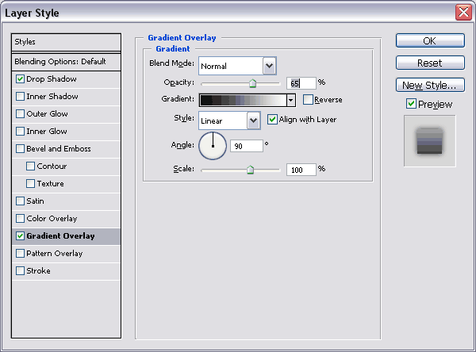
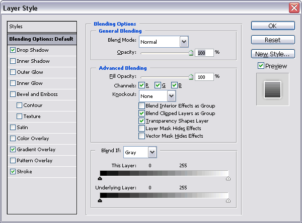
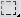

Glassy text
Step 1
Make a new document. File –> New (or Ctrl-N)
Insert the following properties:
- Width: 400 pixels
- Height: 100 pixels
- Background color: white
Step 2
Create a new layer for your text. Press T or click on the Horizontal Type Tool .
Click on your document and type your text. E.g. PhotoQ
Insert the following properties:
- Font: Arial Black (you may choose every font you want)
- Font-size: 36 pt (don't make it too big)
- Anti-alising: Strong (make sure it is set to strong)
- Color: Black (#000)
Step 3
Now you select all (Ctrl-A) and copy all (Ctrl-C) and paste all (Ctrl-V).
You have to do this to align your text to the center.
Now your text is rasterized so you can not change it anymore.
Step 4
You right-click on your layer and select Blending Options.
Insert the following properties:



Step 5
You should become something like this:
Now you press M or click on the Rectangular Marquee Tool .
And you select the upper part off your text. about 30%
You make a new layer by pressing Shift-Ctrl-N or by clicking on Create a new layer .
Fill this layer with white and set the opacity to 15%.
This is what you should have: